Utilities - osleyes
As an alternative to fslview or fsleyes, OSL includes its own NIFTI file viewer, osleyes. The main advantages of osleyes are
- Pure MATLAB implementation, does not require FSL
- Loads faster than starting fslview or fsleyes externally
- Controllable and scriptable from MATLAB
- Easy to save high resolution figure outputs
The main limitations are
- Not as extensively tested as fsleyes
- May have issues with files that have unusual xform transformations, data types, or scalings. There is a low likelihood of this being a problem in typical MEG analysis usage of OSL, but is a limitation to keep in mind if using osleyes as a general NIFTI viewer
Contents
Loading files
Loading files is simple. First we specify some files
nii_parcels = fullfile(osldir,'parcellations','dk_cortical.nii.gz'); nii_roi = fullfile(osldir,'example_data','osleyes_example','Right_Temporal_Occipital_Fusiform_Cortex_8mm.nii.gz'); nii_tstat = fullfile(osldir,'example_data','osleyes_example','tstat1_gc1_8mm.nii.gz'); nii_std_brain = fullfile(osldir,'std_masks','MNI152_T1_8mm_brain.nii.gz');
And now load with a call to osleyes
osleyes(nii_tstat);
Notice how
- The dropdown list shows the list of layers/images in the plot. A standard brain has automatically been selected
- The range of data values was automatically chosen, and because some values were negative, a two-sided colormap has automatically been chosen
The first argument to osleyes specifies which images you want to display. This can either be the name of a single file, or a cell array of files. If you specify a single image, then a standard brain will automatically be selected based on the size of the image. If you specify a cell array, then leave the first item empty to have it automatically load in the brain image. So the above command is equivalent to
osleyes({[],nii_tstat});
If you don't want to have a standard brain image selected, then omit this first item e.g.
osleyes({nii_tstat});
To display more than one layer, you must use the cell array input option e.g.
osleyes({[],nii_roi,nii_tstat});
Note that the standard brain is selected based on the first layer that you specify - in the above example, the spatial resolution would be chosen based on nii_roi rather than nii_tstat. This may be an issue for you if you want to plot several layers with different spatial resolutions. In that case, you may wish the explicitly specify the standard brain you wish to use
close all
o = osleyes({nii_std_brain,nii_roi,nii_tstat});
Notice how the osleyes constructor returns an osleyes object. This object is tied to the figure displayed on screen. You can manipulate the object to change what is displayed in the figure. The handle for this object is stored in the figure itself. If you forgot to capture the osleyes object during construction, you can select the figure, and recover the object using
o = get(gcf,'osleyes')
o =
osleyes with properties:
layer: [1×3 struct]
current_point: [1 1 1]
active_layer: 3
show_controls: 1
show_crosshair: 1
title: ''
nvols: 100
fig: [1×1 Figure]
images: {1×3 cell}
Similarly, the osleyes object contains a handle to the figure that it is bound to, if you want to operate on the figure associated with the object
o.fig
ans =
Figure (1) with properties:
Number: 1
Name: ''
Color: [0 0 0]
Position: [113.1667 37.1333 93.3333 28.0000]
Units: 'characters'
Use GET to show all properties
Displaying variables
You can also plot variables directly without first saving them to a nii file. There are two ways to specify the inputs:
- A matrix
- A struct
To specify input as a matrix, you can provide either
- A 1D vector with number of rows equal to voxels in a standard mask (e.g. 3559x1)
- A 2D vector as per above (e.g. 3559x5 would have 5 volumes)
- A 3D matrix with resolution the same as one of the standard masks (e.g. 23×27×23)
- A 4D matrix as per above (e.g. 23×27×23x5 would have 5 volumes)
In this case, a standard mask is guessed based on the size of the matrix, and the xform data for that standard mask is automatically attached. A warning will be displayed to indicate that this has occurred - in general, you should always keep track of your xform matrix.
o = osleyes(randn(3559,1));
Guessing template: /Users/romesh/oxford_postdoc/toolboxes/osl/std_masks/MNI152_T1_8mm_brain.nii.gz Guessing template: /Users/romesh/oxford_postdoc/toolboxes/osl/std_masks/MNI152_T1_8mm_brain.nii.gz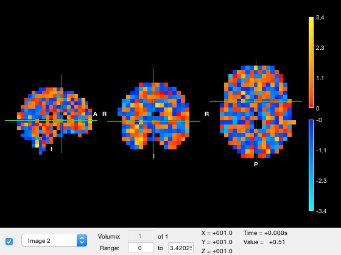
Alternative, you can specify the xform matrix by using a struct, with fields img and xform. Note that in this case, img must be 3D or 4D, because without a standard mask, you cannot reshape a matrix into a volume.
[nii_data,~,nii_xform] = nii.load(nii_tstat); o = osleyes(struct('img',nii_data,'xform',nii_xform));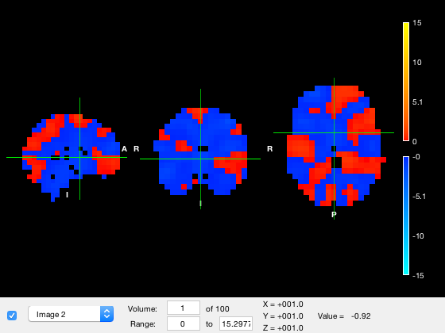
You can optionally include a name field that will be used in the dropdown list.
o = osleyes(struct('img',nii_data,'xform',nii_xform,'name','tstat'));
Selecting layers
Each image is a layer/overlay in the viewer. The order of the layers is determined by the order of the input nii files. For simplicity in implementation, you cannot change the image data or the order of the layers after you have created the figure - if you want to change these properties, just make a new osleyes figure. However, you can change things like the colour map, range, and visibility of the layers. Each layer has several properties
- visible - whether the layer is drawn or not
- volume - for images that have more than one volume (i.e. a 4D image), which volume is being displayed
- clim - the colour range limits
- colormap - which colormap is used for the layer
- alpha - opacity value for the layer
- name - label that appears in the dropdown list. By default, this is the name of the nii file, but a numerical index will be used if you input a matrix. In that case, you may wish to change the name to something more informative.
All of these properties can be set programatically by interacting with the layer property of the osleyes object, and for convenience, the visibility, current volume, and color range can also be set in the GUI. The active_layer is the layer whose properties are displayed in the GUI controls and the layer whose colormap and color range are used for the colorbar displayed on screen. The layers are listed in the dropdown list in the GUI, and also in the images property of the osleyes object:
close all
o = osleyes({nii_std_brain,nii_roi,nii_tstat});
o.images{:}
ans =
'/Users/romesh/oxford_postdoc/toolboxes/osl/std_masks/MNI152_T1_8mm_brain.nii.gz'
ans =
'/Users/romesh/oxford_postdoc/toolboxes/osl/example_data/osleyes_example/Right_Temporal_Occipital_Fusiform_Cortex_8mm.nii.gz'
ans =
'/Users/romesh/oxford_postdoc/toolboxes/osl/example_data/osleyes_example/tstat1_gc1_8mm.nii.gz'
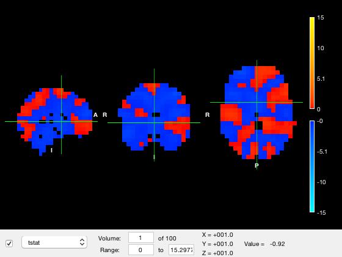 The images property will contain the name of the nii file if the layer data came from a nii file, otherwise it will contain original image data if the input was a matrix or struct.
Currently the active layer is 'tstat1_gc1_2mm.nii.gz' which is the third layer. To change the layer, simply set it to a different one
o.active_layer = 1;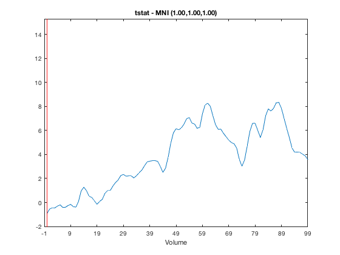
Notice how in the figure
- The dropdown list item has changed to the first layer
- The color range now corresponds to the values in the standard brain image
- The selected volume and volume count have updated. The volume selection field is greyed out because there is only one volume in the layer
- The 'Value' readout corresponding to the data value at the position marked by the crosshair displays the value of this layer
Although the standard brain image is present, it cannot be seen because it is hidden by the tstat layer. The visibility of the tstat layer can be changed in two ways
- You could use the dropdown box to select the layer, and then the checkbox to the left of the dropdown to turn the layer off
- You can set the 'visible' property of the layer to hide that layer
The 'visible' property is an boolean entry with a value of 0 or 1 depending on whether the layer should be rendered or not. To hide the tstat layer, we can simply set the visibility of layer 3 to off
o.layer(3).visible = 0;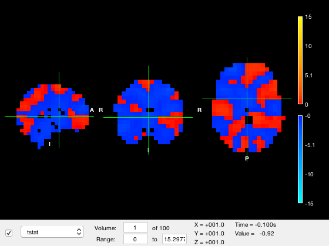
Another way to change the visibility of a layer is by changing its opacity, which is in the alpha property of the layer containing an opacity value between 0 (fully transparent) and 1 (fully opaque). So to render the tstat layer as semi-transparent, we can use
o.layer(3).alpha = 0.5; % Set 50% opacity o.layer(3).visible = 1; % Make the layer visible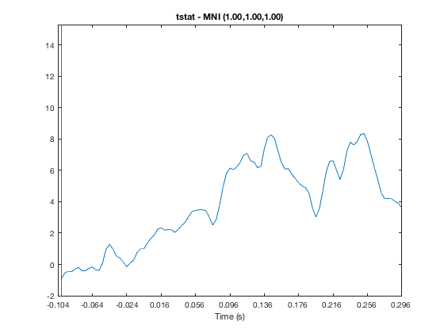
Moving around the plot
Just like in fslview or fsleyes, you can change the slices that are displayed by clicking and dragging on any of the three brain images. As you move the mouse, the position of the crosshairs will change. The coordinates of the crosshairs in MNI coordinates are displayed as the 'XYZ' values in the figure. You can also retrieve or set the coordinates for the crosshair programatically through the current_point property of the osleyes object.
o.current_point o.current_point = [35 -55 -17];
ans =
1 1 1
Colour scales
Each layer has its own colormap and color range. These are stored in the colormap and clim properties of the layer. First, we will change to the parcel layer and make hide the tstat layer
o.active_layer = 2; o.layer(3).alpha = 1; o.layer(3).visible = 0;
First, we will set the colour range for the parcel layer (which is layer 2).
o.layer(2).clim = [10 50];
Notice that when the colour range is updated, the colorbar changes, the values in the color range in the GUI are changed, and the image is automatically re-rendered. One important point to be aware of is that values that are below the lower color limit are not displayed (i.e. they are made transparent) while values that are above the upper color limit are clipped to the highest colormap color.
You can also change the colormap. There are two ways to set the colormap
- You can provide a string that is the name of a colormap function on the path, the same as normal Matlab colormaps. For example, 'jet'
- You can provide a matrix of colormap RGB values - again, the same as with the normal 'colormap' function in Matlab
For example, to change to the jet colormap, we can use
o.layer(2).colormap = 'jet';
Or a random colormap
o.layer(2).colormap = rand(10,3);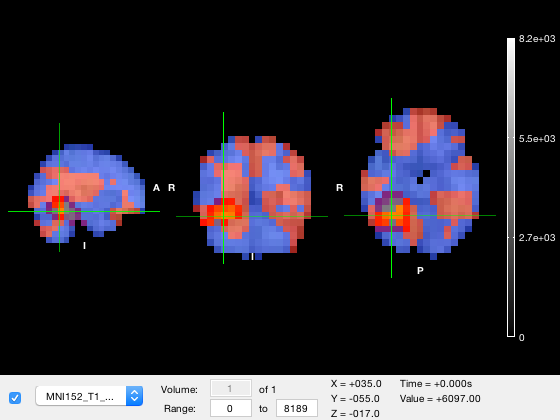
A good colormap should be 'perceptually uniform' - qualitatively, this means the colormap should be designed that it doesn't induce the perception of features that aren't really present. This can happen if the colormap has perceptually larger changes over some value ranges than others. Matlab's built-in 'parula' colormap is one example of a perceptually uniform colormap. OSL includes the osl_colormap function which contains a set of perceptually uniform colormaps. These include
- hot - red to yellow
- cold - blue to light blue
- rwb - red-blue with white in the middle
- rkb - red-blue with black in the middle
- green - green to light green
- grey or gray - greyscale
The osl_colormap function returns a matrix of RGB values, and you can use these colormaps in normal Matlab plots by running colormap(osl_colormap('hot')). Similarly, in osleyes you can pass the output of this function to the colormap property
o.layer(2).colormap = osl_colormap('green');
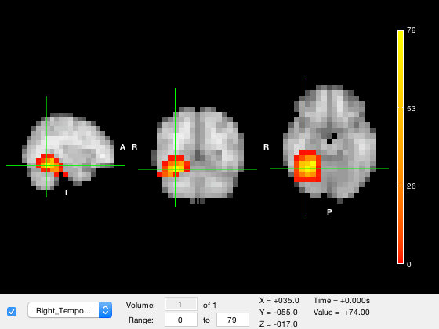 Lastly, sometimes it is necessary to select different colormaps for positive and negative values. To do this, you set the colormap property to a cell array containing two elements - the first entry contains the positive colormap, and the second contains the negative colormap
o.layer(2).colormap = {'jet',osl_colormap('green')};
When you do this, values that are larger than the lower color limit will be rendered using the 'positive' scale, and values smaller than the lower color limit will be rendered using the 'negative' scale. The color limits for the positive scale will be the same as the color limit property, and the color limit for the negative scale will be the negative of these values. This definition is unambiguous but extremely confusing if you set the color range to negative values, and especially if the magnitude of the upper limit is less than than the magnitude of the lower limit (e.g. [-1 -0.1])
If using a bidirectional colormap, it is HIGHLY recommended that the color range spans positive values only!
Setting a title
The osleyes object has a title property which displays a plain text title on the plot. If the title string is empty, then no title will be displayed. If you set the title string, then the plot will automatically be resized to accommodate the title. For example
o.title = 'My Plot';
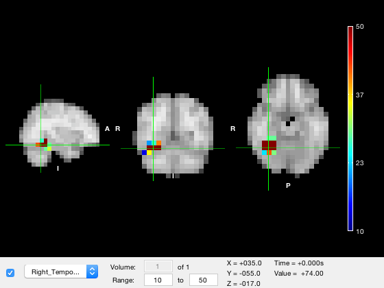 Viewing different volumes
Some NIFTI files contain a fourth dimension - for images like tstat maps, this could be time, and for images like parcellations, it could be parcel index. You can set which volume is displayed using the 'volume' text box in the GUI, or using the volume property of the layer. For example, to display the fifth volume of the tstat, we could use
o.active_layer = 3; o.layer(3).visible = 1; o.layer(3).volume = 5;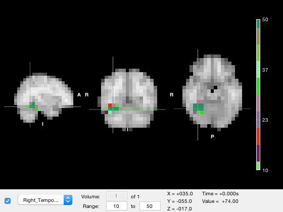
With the GUI as the active window, you can use the up and down arrow keys to cycle through the volumes. The number of volumes in the active layer is also available in the nvols property of the osleyes object.
You can display a movie using the 'animate' method, which will programatically cycle through the images with a given frame rate. For example, to cycle through at 10 frames per second, use
o.animate(10)
The animation can be stopped by pressing Ctrl-C in the command window. The default frame rate is 30fps.
Saving output figures
You may not want to have the control panel and crosshairs visible if saving output figures. You can toggle their visibility programatically
o.show_controls = 0; o.show_crosshair = 0;
Viewing the timeseries
You can display a line plot of the data value across volumes at the current MNI coordinates by
- Right clicking on the plot and selecting 'Plot timeseries'
- Calling the 'plot_timeseries' method on the osleyes object
o.show_controls = 1; o.plot_timeseries()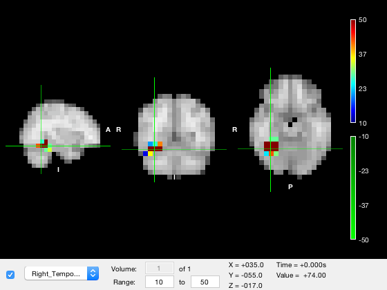 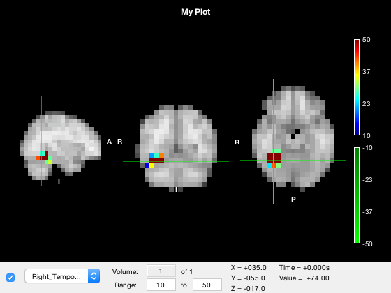
The red bar marks the current volume, and is updated if you set the current volume or run the animation
o.layer(3).volume = 50;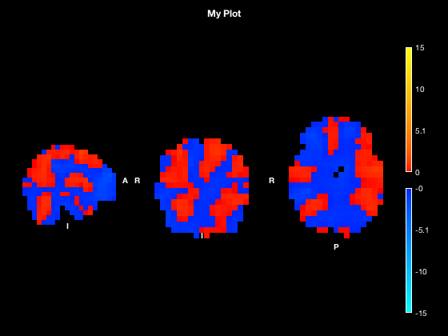
If you click on the timeseries plot, the current volume will be changed accordingly. Similarly, if you click on the main window to change the current coordinates, the timeseries will automatically update. The timeseries always corresponds to the active layer, and will update if you change the active layer. This may appear confusing if you change to a layer that only has one volume e.g.
o.active_layer = 2;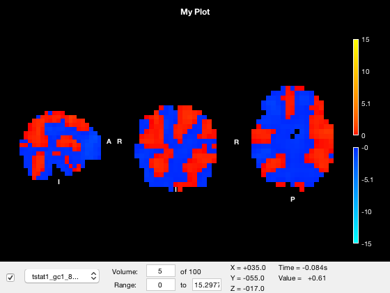 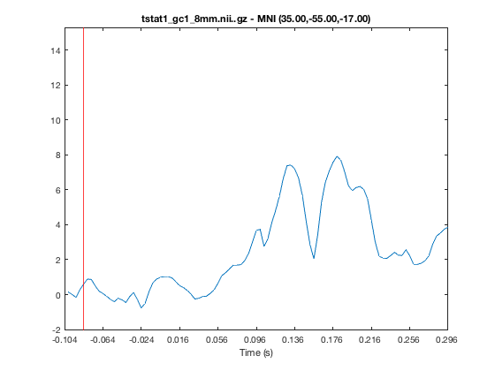
A warning will be displayed on the timeseries plot if this is the case.
Formatting via input options
In addition to the NII files, you can also pass additional options to the osleyes object. This could allow you to programatically format multiple plots, or to pass complete formatting options from one function to another. These options take the form of key-value pairs. Each key corresponds to a property of the object, and each value corresponds to what you want to assign to that property after construction. For example
close all o = osleyes({[],nii_roi,nii_tstat},'colormap',{'jet','hsv',osl_colormap('green')},'clim',{[],[0 5],[1 5]},'alpha',[NaN 0.5 0.25],'show_crosshair',false,'volume',[1 1 50]);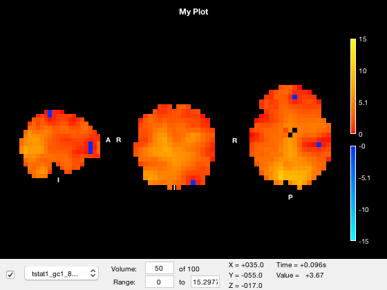
For properties of the osleyes object, (that is, not layer properties), this is equivalent to
o.show_crosshair = false; o.current_vols = [1 1 50]
For properties of the layer, you need to pass in an array or cell array with the same length as o.layer. Each entry of the array will be assigned to each layer, if it is not empty or is finite. So for example
'clim',{[],[0 5],[1 5]}
is equivalent to
o.layer(2).clim = [0 5] o.layer(3).clim = [1 5]
and layer 1 is skipped because an empty list was present. Similarly, the use of
'alpha',[NaN 0.5 0.25]
means to skip setting the 'alpha' property of the first layer, and to set the other two.
Finally, you could also provide these options as a struct. For example
% s = struct; % s.colormap = {'jet','hsv',osl_colormap('green')}; % s.clim = {[],[0 5],[1 5]}; % s.alpha = [NaN 0.5 0.25] % s.show_crosshair = false; % s.current_vols = [1 1 50] % o = osleyes({[],nii_roi,nii_tstat},s); %
Putting it all together
Suppose we wanted to make an animation of the tstat, with the parcel overlaid as a semitransparent volume with fixed colour. We could do this with
close all o = osleyes({[],nii_tstat,nii_roi}); % Put the ROI layer on top o.current_point = [34 -50 -13]; % Set the coordinate for the slice o.layer(3).colormap = [0 1 0]; % Make the ROI green o.layer(3).alpha = 0.4; % Make the ROI transparent o.active_layer = 2; % Display colorbar for the tstat layer o.layer(2).colormap = osl_colormap('hot'); % Use single sided colormap o.layer(2).clim = [0 10]; % clip colour at upper end o.show_controls = 0; % Hide the controls o.show_crosshair = 0; % Hide the crosshair v = VideoWriter('test.mp4','MPEG-4'); open(v) for j = 1:o.nvols % Iterate over volumes o.title = sprintf('t=%d',j); o.layer(2).volume = j; writeVideo(v,frame2im(getframe(o.fig))) end close(v)